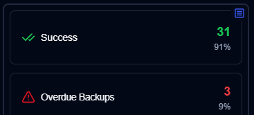

Dashboard¶

The duplistatus dashboard provides a comprehensive view of your Duplicati backup operations across multiple servers.
Tip
On the first use, you should collect backup logs from all your Duplicati servers
to populate the database. Please refer to the Collect Backup Logs
section for guidance.
Dashboard Overview¶

The user interface consists of several elements, organised into different sections to provide a clear and intuitive experience:
- Application Toolbar: Provides easy access to main functions and configurations
- Dashboard Summary: A summary of all monitored servers
- Servers Overview: Cards or a table showing the latest status of all backups from monitored Duplicati servers
- Overdue Details: A visual warning for overdue backups with details on hover
- Available Backup Versions: Click the blue icon to view backup versions available on the backup destination
- Backup Metrics: Charts displaying backup metrics over time
- Server Details: A list of recorded backups for a specific server, including statistics
- Backup Details: Detailed information for a specific backup, including log messages (execution, warnings, and errors)
Application Toolbar¶
The toolbar provides easy access to key functions and settings.

| Button | Description |
|---|---|
| Refresh screen | Execute a refresh immediately |
| Auto-refresh | Enable/disable auto-refresh. Configure the interval in Display Settings |
| Open NTFY | Open the ntfy.sh website on the topic configured in Settings → NTFY Settings |
| Duplicati configuration | Open the Duplicati server configuration (web interface) |
| Check overdue backups | Execute the check for overdue backups now |
| Collect logs | Connect to a Duplicati server to collect all backup logs from its database |
| Database maintenance | Clean the database, remove old backup logs, or delete data for a specific server |
| Display Settings | Configure how duplistatus will display data |
| Settings | Configure notifications, overdue monitoring, server details and templates |
| Theme | Toggle between dark (default) and light themes |
Dashboard Summary¶
This section displays aggregated statistics for all backups.


- Total Servers: The number of servers being monitored
- Total Backup Jobs: The total number of backup jobs (types) configured for all servers
- Total Backup Runs: The total number of backup logs from runs received or collected for all servers
- Total Backup Size: The combined size of all source data, based on the latest backup logs received
- Storage Used: The total storage space used by backups on the backup destination (e.g., cloud storage, FTP server, local drive), based on the latest backup logs
- Uploaded Size: The total amount of data uploaded from the Duplicati server to the destination (e.g., local storage, FTP, cloud provider)
- Overdue Backups (table): The number of backups that are overdue. See Backup Notifications Settings
- Layout Toggle: Switches between the Cards layout (default) and the Table layout
Cards Layout¶
The cards layout shows the status of the most recent backup log received for each backup.

- Server Name: Name of the Duplicati server (or the alias)
- Hovering over the Server Name will show the server name and note
- Overall Status: The status of the server. Overdue backups will show as a
Warningstatus - Summary information: The consolidated number of files, size and storage used for all backups of this server. Also shows the elapsed time of the most recent backup received (hover over to show the timestamp)
- Backups list: A table with all the backups configured for this server, with 3 columns:
- Backup Name: Name of the backup in the Duplicati server
- Status history: Status of the last 10 backups received
- Last backup received: The elapsed time since the current time of the last log received. It will show a warning icon if the backup is overdue
- Time is shown in abbreviated format:
mfor minutes,hfor hours,dfor days,wfor weeks,mofor months,yfor years
- Time is shown in abbreviated format:
Note
You can use the Display Settings to configure the card sort order. The available options are Server name (a-z), Status (error > warning > success), and Last backup received (new > old).
Side Panel Toggle¶
The user can toggle the top right button on the side panel to toggle the panel view:
- Status: Show statistics of the backup jobs per status, with a list of overdue backups and backup jobs with warnings/errors status

- Metrics: Show charts with duration, file size and storage size over time for the aggregated or selected server

Table Layout¶
The table layout provides a more detailed view of all backup information in a tabular format.

Table Columns¶
- Server: Server name or alias
- Backup: Backup job name
- Status: Current backup status
- Last Backup: Time since last backup
- Duration: Backup duration
- Files: Number of files backed up
- Size: Backup size
- Storage: Storage used
- Uploaded: Data uploaded
- Versions: Available backup versions
Table Features¶
- Sortable Columns: Click column headers to sort
- Filterable: Use the search box to filter servers
- Expandable Rows: Click on a row to see more details
- Status Indicators: Color-coded status indicators
- Quick Actions: Right-click for context menu options
Backup Details¶
Hovering over a backup in the list displays details of the last backup log received and any overdue information.

- Server Name : Backup: The name or alias of the Duplicati server and backup, will also show the server name and note
- The alias and note can be configured at
Settings → Server Settings - Notification: An icon showing the configured notification setting for new backup logs
- Date: The timestamp of the backup and the elapsed time since the last screen refresh
- Status: The status of the last backup received (Success, Warning, Error, Fatal)
- Duration, File Count, File Size, Storage Size, Uploaded Size: Values as reported by the Duplicati server
- Available Versions: The number of backup versions stored on the backup destination at the time of the backup
If this backup is overdue, the tooltip also shows:
- Expected Backup: The time the backup was expected, including the configured grace period (extra time allowed before marking as overdue)
Notifications Icons¶
The notification icons indicate the configured notification settings for each backup:
- 🔔: Notifications enabled
- 🔕: Notifications disabled
- ⚠️: Overdue backup warning
- ❌: Backup failed
- ✅: Backup successful
Overdue Details¶
Overdue backups are highlighted with warning indicators and show additional information:
- Expected Time: When the backup was expected to run
- Grace Period: Extra time allowed before marking as overdue
- Last Successful Backup: When the last successful backup occurred
- Overdue Duration: How long the backup has been overdue
Available Backup Versions¶
Click the blue icon to view backup versions available on the backup destination:
- Version List: All available backup versions
- Version Details: Information about each version
- Restore Options: Links to restore from specific versions
- Version Management: Options to manage backup versions
Backup Metrics¶
The metrics section provides charts and statistics about backup performance:
Duration Charts¶
- Backup Duration Over Time: Shows how long backups take
- Trend Analysis: Identifies performance trends
- Comparison: Compare backup durations across servers
Size Charts¶
- File Size Trends: Monitor data growth over time
- Storage Usage: Track storage consumption
- Upload Statistics: Monitor data transfer rates
Performance Metrics¶
- Success Rate: Percentage of successful backups
- Average Duration: Mean backup duration
- Peak Usage: Maximum resource usage
- Efficiency Metrics: Backup efficiency indicators
Customization Options¶
Display Settings¶
- Layout: Choose between Cards and Table layouts
- Sort Order: Configure how servers are sorted
- Refresh Interval: Set automatic refresh frequency
- Theme: Switch between dark and light themes
View Options¶
- Compact View: Show more information in less space
- Detailed View: Show comprehensive backup information
- Custom Columns: Choose which columns to display
- Filter Options: Set up custom filters
Troubleshooting Dashboard Issues¶
Dashboard Not Loading¶
- Check if the container is running
- Verify port 9666 is accessible
- Check browser console for errors
- Review container logs
Missing Backup Data¶
- Verify Duplicati server configuration
- Check network connectivity
- Review backup job status
- Check duplistatus logs
Performance Issues¶
- Reduce refresh frequency
- Limit number of displayed servers
- Check system resources
- Optimize database queries
Next Steps¶
- Server Management: Learn about Server Settings
- Notifications: Set up Notification System
- Backup Monitoring: Monitor Backup Operations
- Troubleshooting: Common issues and Troubleshooting Guide